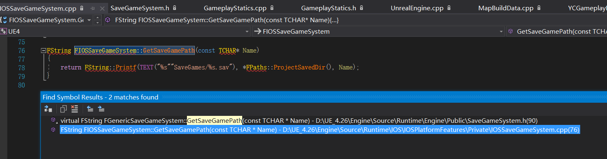
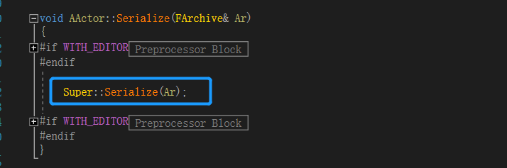
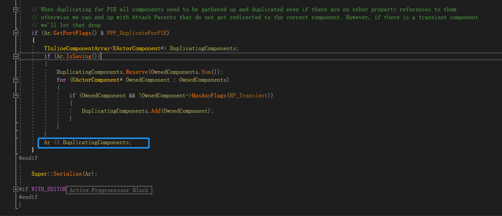
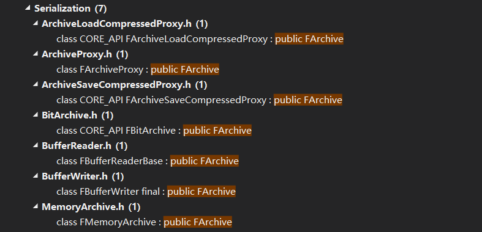

# 从 SVG 文件开始的旅程～～～
主要是记录一下两个遇到的问题，究其原因并给出解决方案
# 问题 1：SVG 文件都放在一个文件夹里面，如果不同类型的数据越来越多，就会显得很乱，怎么办（强迫症简直要命啊！！）
惯例先放 UGameplayStatics::SaveGameToSlot 的实现


# 原因：
图一是我们调用的 API，里面调用了 SaveGameToMemory 和 SaveDataToSlot 两个函数
图二是 SaveGameToMemory 的实现，主要就是序列化 ASaveGame 的数据并返回是否序列化成功
图三是 SaveDataToSlot 的实现，就是把前面序列化后的数据给存到磁盘里面
图三中 SaveGame 函数里面存的地址是写死在 SaveGameSystem 里面的，如果要改根目录，那就只能改源码。以下是 SaveGame 的实现代码：


但是还有一种比较折中的办法，详见下文


# 解决方案：
- 改源码 (不建议，大佬当我没说)

改源码就是改这个函数就可以了，但有好几个 ISaveGameSystem 的子类都要改过来，分别对应不同硬件平台
还是不建议改源码，就算技术过硬，那不能升级引擎其实也是一种损失（个人看法）
在上图中可以看出，这个 SaveGamePath 函数其实是存在 SaveGames 文件夹下的，然后加上我们的文件名和后缀，但是其实我们是可以在文件名里面进行分类的。如：
SaveGame 1
2
3ASaveGame* SaveGameObject;
FString SlotName = FString("PlayerData/") + FString("SlotName")
SaveGameToSlot(SaveGameObject, SlotName, 0);这样一来，我们的 SaveGameObject 就会以 SlotName.svg 文件的格式，存在 "SaveGames/PlayerData/" 路径下，就实现了分类
# 问题 2：SaveGameFromSlot 后，LoadGameFromSlot 读到的值为默认值，并不是保存后的值，怎么办？
# 原因与解决方案：
- SaveGameFromSlot 和 LoadGameFromSlot 都是依赖 FArchive 子类来实现的。但是 ue 默认为我们配置的是 只有带 UPROPERTY 宏定义的变量才能被 UObject 序列化
- 所以如果我们想要 SaveGameFromSlot 和 LoadGameFromSlot 正常工作的话，那就要给想要保存的变量加上 UPROPERTY 宏，使其可以支持反射
# 衍生问题：可不可以不反射而又支持 SaveGameFromSlot 和 LoadGameFromSlot 这两个 API
# 解决方案：
重写 SaveGameToMemory 方法，让 SaveGameToMemory 方法多处理一些没有反射的数据，如：
MySaveGameToSlot 1
2
3
4
5
6
7
8
9
10
11
12
13
14
15
16
17
18
19
20
21
22
23
24
25
26
27
28
29
30
31
32
33bool UMyGameplayStatics::SaveGameToSlot(USaveGame* SaveGameObject, const FString& SlotName, const int32 UserIndex)
{
TArray<uint8> ObjectBytes;
if (SaveGameToMemory(SaveGameObject, ObjectBytes))
{
return SaveDataToSlot(ObjectBytes, SlotName, UserIndex);
}
return false;
}
bool UMyGameplayStatics::SaveGameToMemory(USaveGame* SaveGameObject, TArray<uint8>& OutSaveData)
{
if (SaveGameObject)
{
FMemoryWriter MemoryWriter(OutSaveData, true);
FSaveGameHeader SaveHeader(SaveGameObject->GetClass());
SaveHeader.Write(MemoryWriter);
FObjectAndNameAsStringProxyArchive Ar(MemoryWriter, false);
ArSerializeDelegate.ExecureIfBound(Ar); //ArSerializeDelegate需要在MyGameplayStatics::SaveGameToSlot调用之前绑定回调，并在调用后解绑
SaveGameObject->Serialize(Ar);
return true; // Not sure if there's a failure case here.
}
return false;
}
# 原因：
- 请先品一段源码：



- ASaveGame 是 Actor 的子类，所以先看 Actor 的 Serialize 方法。
- 图一中可以看出，有两块只在 PIE 中才运行的代码，用于将本地构造的组件映射到序列化属性，并把这些组件加入到 Ar 中。
- 图二中可以看出如果要让 Actor 序列化更多的属性 (如图 2 中的 DuplicatingComponent)，我们只需要调用引擎重载过的 << 运算符即可。
- 图三为运算符的部分展示。
- FArchive 是用于存档的基类，可用于以字节顺序无关的方式加载、保存和垃圾收集。其子类包括：压缩数据 字节流数据 缓冲区数据 内存数据的序列化类等，下图只是一部分子类：

实际上，SaveGameToMemory 函数中的 FMemoryWriter 和 FObjectAndNameAsStringProxyArchive 都是 FArchive 的子类，应该说，几乎所有以字节流的方式加载保存数据的类都继承自 FArchive。
另外 UObject 的 Serialize 函数还有一个 StructureArchive::FRecord 参数类型的重载，包括对 UClass，Outer，LoadName，LoadPackage 的处理，还有 SerializeScriptProperties 方法序列化变量，分初次序列化和二次序列化，调用的函数分别是 SerializeTaggedProperties 和 SerializeBinEx，调用过程如下：
1 | UObject::Serialize(StructureArchive::FRecord Record) |